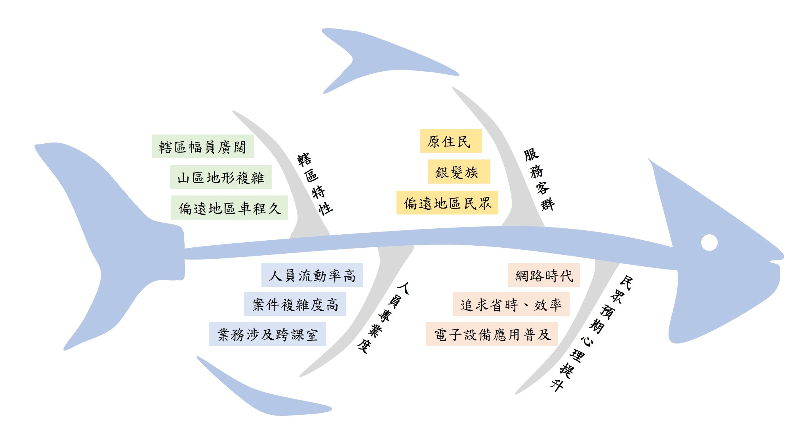
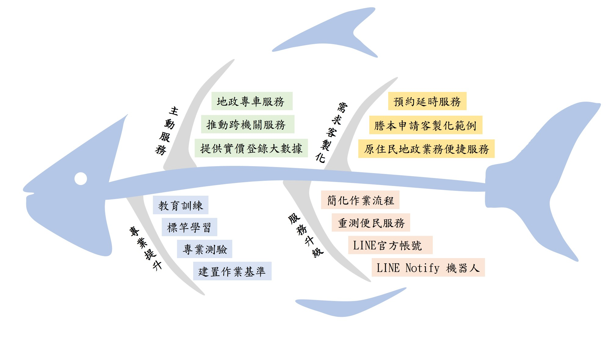
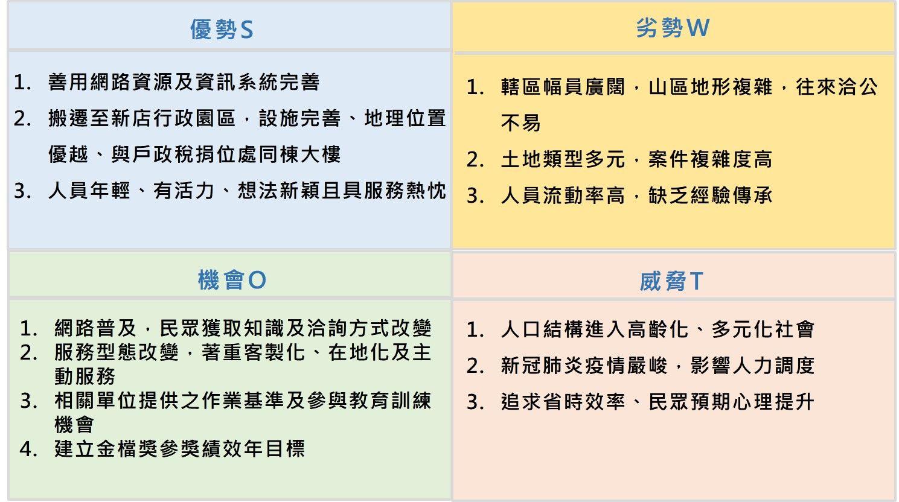
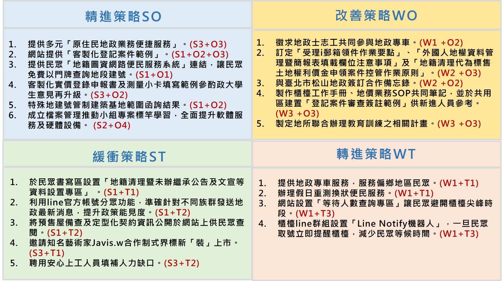
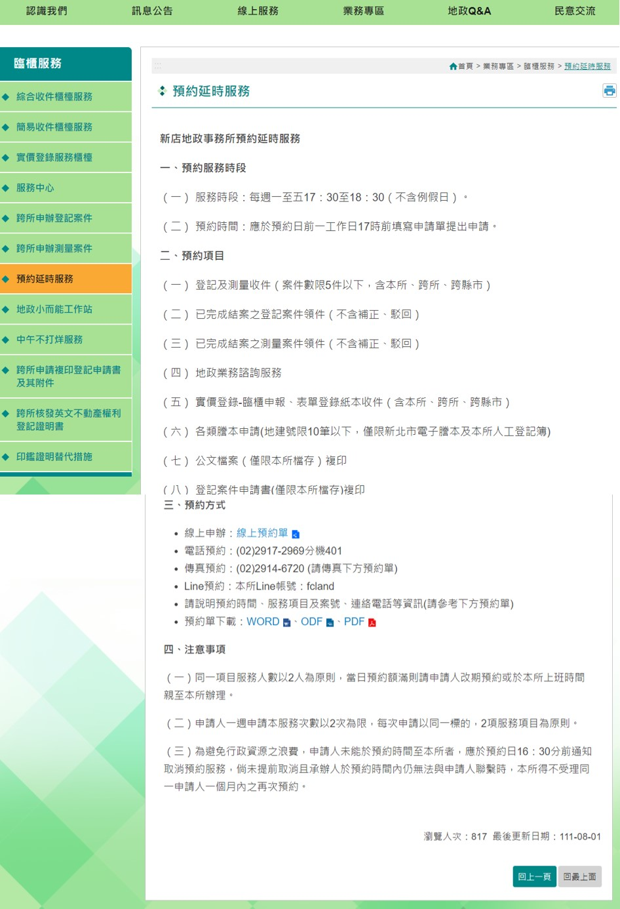
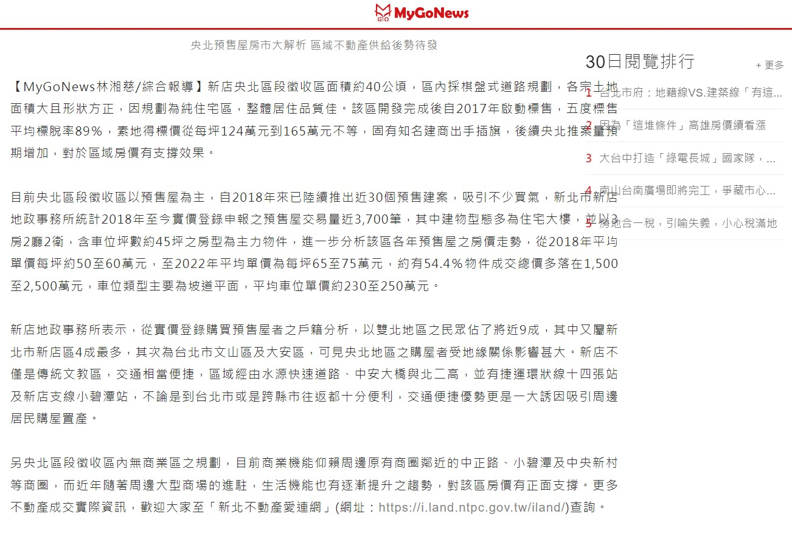
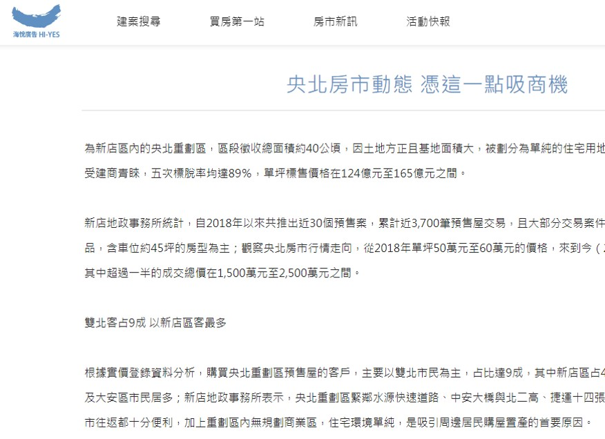
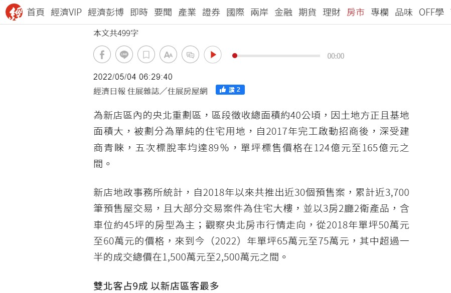

二、重點行銷項目及成效
(一)分析發展條件
為優化服務，針對本所提升服務滿意度面臨之障礙，考量本所轄區特性，服務客群，人員專業度及民眾預期心理等因素，以向右魚骨圖進行分析各項不利因素。
盤點本所各項資源，以向左魚骨圖擬訂大方向，再透過 SWOT
分析本所優勢、劣勢、機會及威脅後，擬定各項對策與措施，力求突破劣勢，發揮所長，期以帶來更專業優質的服務。
-
向右魚骨圖—分析：

-
向左魚骨圖—策略：

-
SWOT分析：

-
SWOT策略：

二、重點行銷項目及成效
(二)本所在地化、客製化服務措施
考量本所轄區幅員廣闊（所轄土地面積約占新北市 1/3
）且服務族群多元，加上現今社會高齡人口漸多等因素，提供依本所轄區特性之各項在地化、客製化服務如下：
| 措施名稱 |
服務目標及成效 |
| 客製化實價登錄申報書表單範例 |
-
服務目標：
透過 GOOGLE
表單方式讓民眾依其申報需求結合實價登錄申報常見錯誤態樣，提供符合其需求之實價登錄申報書範本及可填載之申報書
WORD
檔供其登打後送件之客製化實價登錄申報書，已減少申報錯誤之情形。
-
服務成效：
經統計，本所每日約有 25
位民眾具有協助申報實價登錄之需求，倘以民眾每案來回時間 1
小時至本所實價登錄櫃臺詢問申報相關事宜，本措施共計節省約 25
小時，能有效減短民眾到所辦理之交通成本及等待時間。另外，倘以服務每一民眾
10 分鐘方式計算，本措施得節省櫃檯人員及地價承辦約
250 分鐘之成效，有形及無形效益皆為顯著。
【客製化實價登錄申報書表單範例】
|
| 預約延時服務 |
-
服務目標：
為解決民眾申辦地政相關業務項目時，需配合本所上班時間之困擾，特提供網路預約延時服務，以貼近民眾需求，提昇本所服務品質。
-
服務成效：
考核區間預約延時服務共計 13 件。

【預約延時服務】
|
| LINE即時諮詢服務 |
-
服務目標：
本所 LINE 官方帳號提供客製化地政業務諮詢服務，使民眾可享受 24
小時自動回覆服務，隨時都可進行地政業務諮詢。若個案情況較複雜，也可切換成專人回覆。
-
服務成效：
本次考核區間累計自動回覆 342 次，由專人回覆 156 次，累計推播 43 則訊息。
【 LINE 即時諮詢畫面】
|
| 原住民櫃台 |
-
服務目標：
本所針對轄區內特有之原住民保留地，提供下列原住民地政便捷服務，以落實照顧原住民的權益與需求，並縮短城鄉差距，增進本所服務品質及效率。
-
服務成效：
-
(1)原住民服務櫃台共計服務
24 件。
-
(2)地政 LINE 線上服務原住民保留地捐贈問題，共計
1 件。
-
(3)地政專車預計於 111 年 5 月 27
日至烏來區原住民溫馨照顧勞動服務社出隊，共計服務
15
人。
-
(4)烏來區公所小而能工作站代收登記案件
0 件、測量案件
30 件、謄本
1,534 件，共計收件
1,564 件。
-
(5)網站烏來原住民保留地瀏覽人次共計
1,223 次。
|
|
實價登錄大數據應用-發布「央北預售屋房市大解析
區域不動產供給後勢待發」新聞稿
|
-
服務目標：
新店央北推案量預期增加，對於區域房價有支撐效果，故本所針對此一現象撰擬新聞稿並分析相關數據。
-
服務成效：
本所撰寫之新聞稿提供潛在購屋者相關房市資訊及數據分析，共獲6家媒體見報。

【媒體見報】

【媒體見報】

【媒體見報】
|